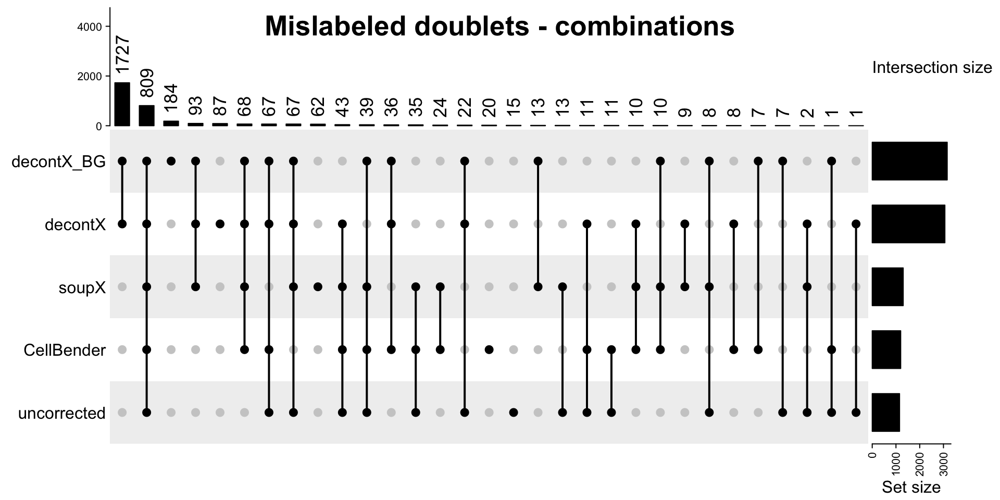
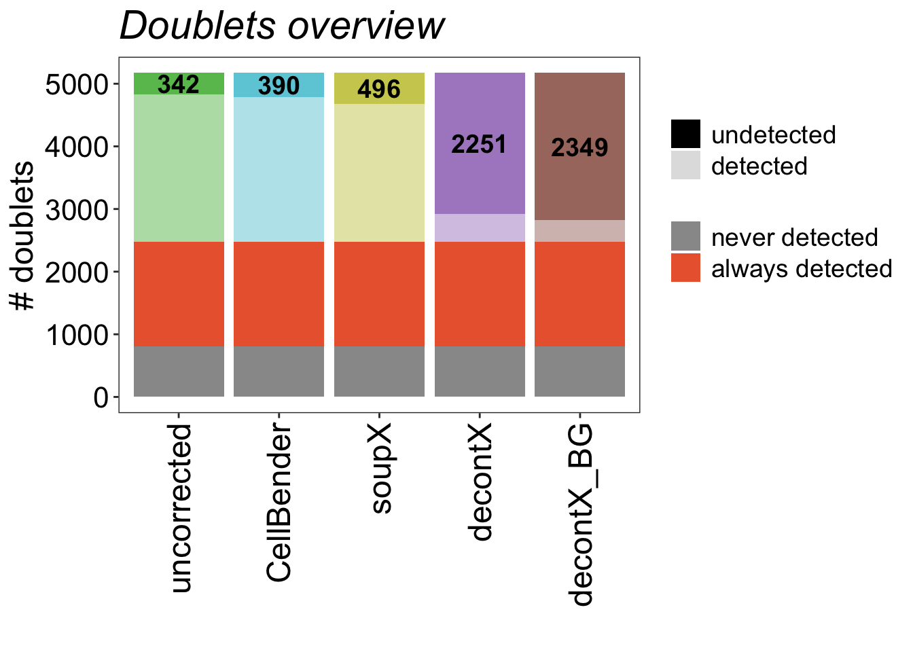
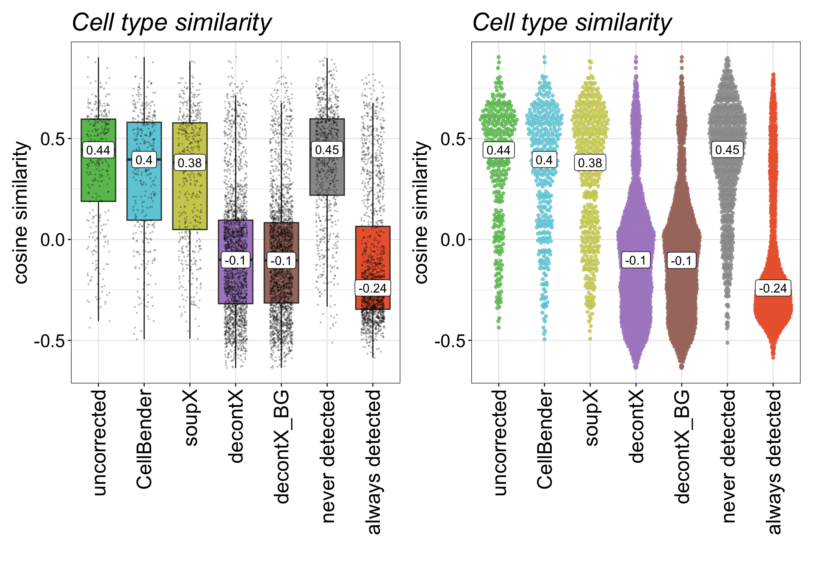
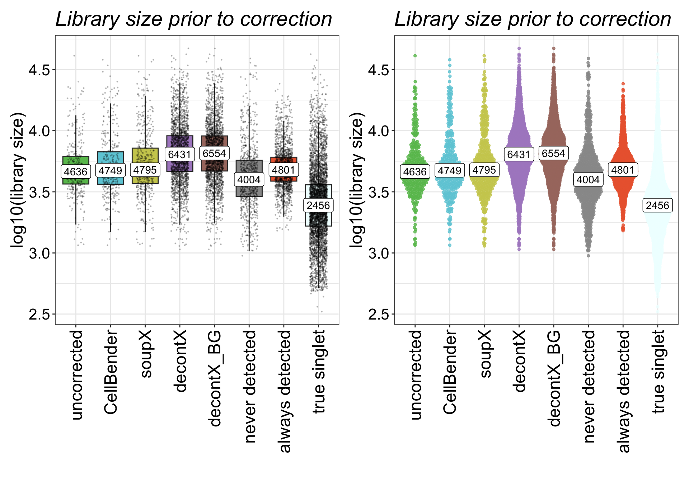
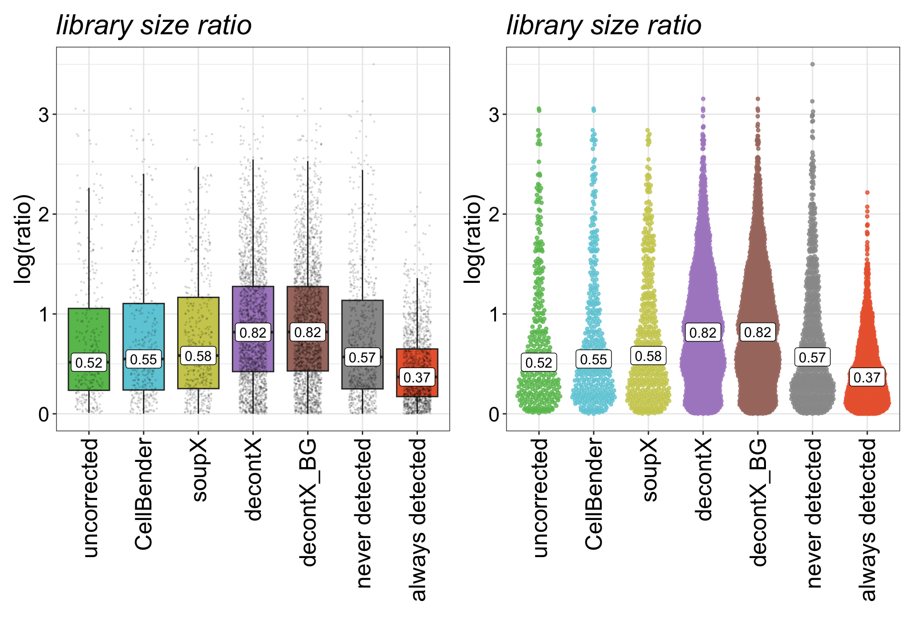
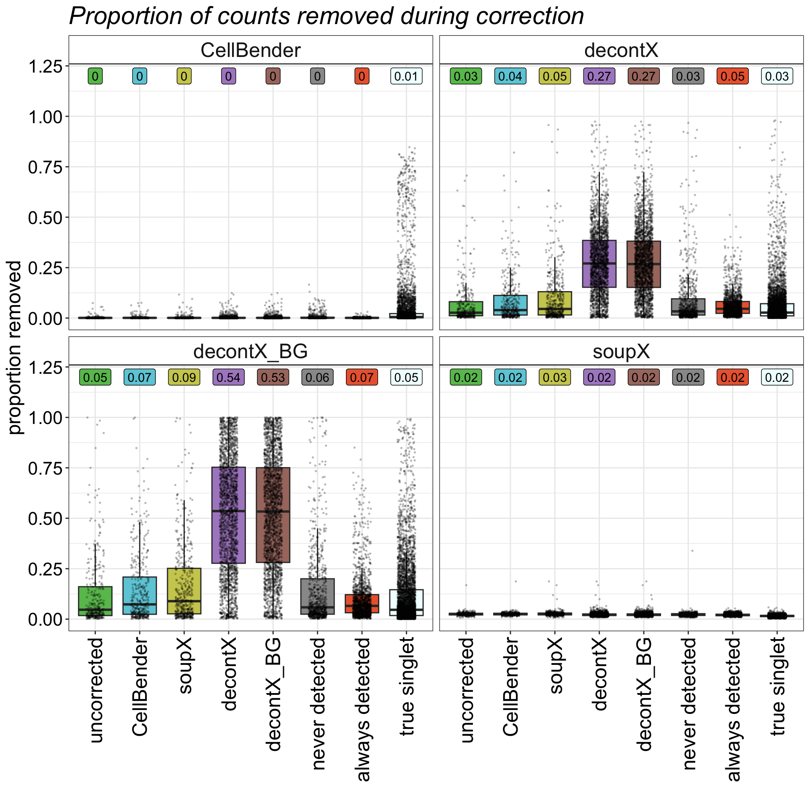
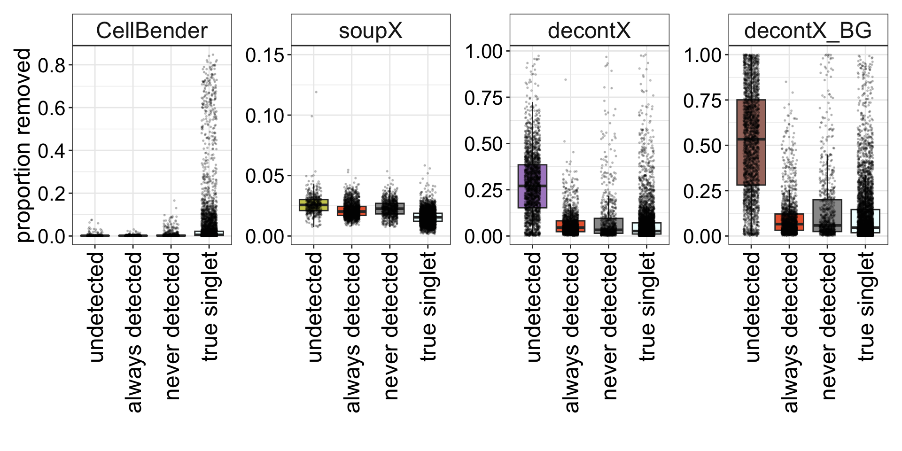
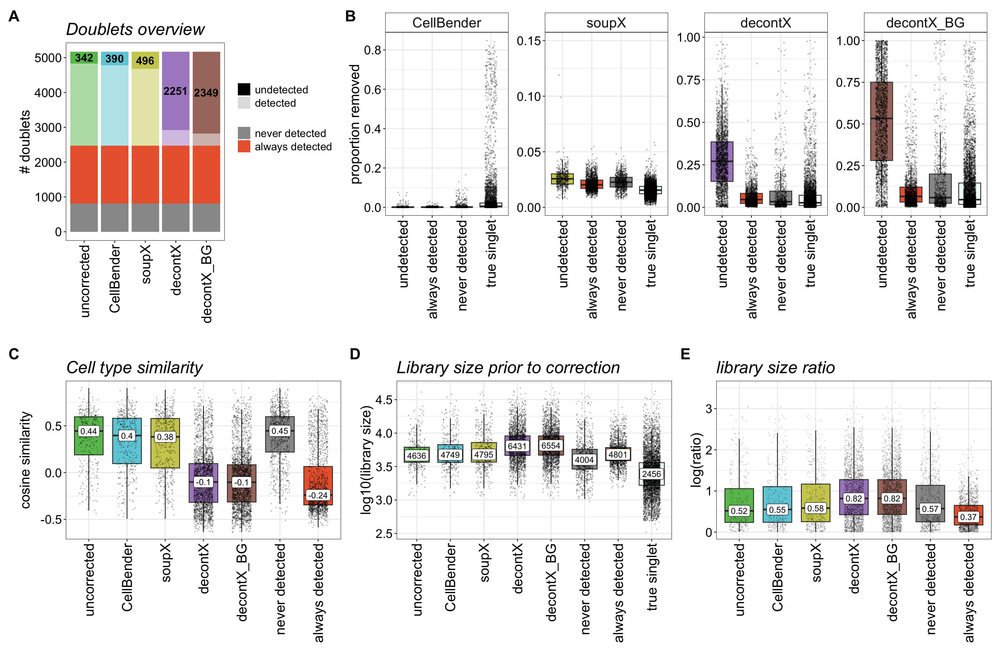

Set-up
This markdown makes the plots for Figure 4: Engineered doublets
reveal key features of undetected doublets after ambient RNA
correction.
In this markdown, we perform an in-depth characterisation of the
doublets that were mislabeled by scDblFinder.
Load libraries
suppressPackageStartupMessages({
library(SingleCellExperiment)
library(tidyverse)
library(readr)
library(here)
library(Seurat)
library(scater)
library(qs2)
library(DropletUtils)
library(patchwork)
library(rstatix)
library(yardstick)
library(caret)
library(ComplexHeatmap)
library(ggrepel)
library(png)
})Warning: package 'ggplot2' was built under R version 4.5.2knitr::opts_chunk$set(fig.align = "center")
Load data
files <- list.dirs(path = here("output/data/Tonsils_10xFlex/Engineered/"), full.names = T, recursive = F)
files <- files[grepl("Tonsils_10xFlex_engineered_12k_0.15p", files)]run_read_data_all_cells <- function(path){
#original metadata (from uncorrected)
meta <- read_tsv(paste0(str_match(path, "^(.*?\\d+s)(?:_.*)?$")[,2], "/metadata.tsv"), show_col_types = F)
#doublet calling results
doublet_file <- list.files(path = paste0(path, "/doublet_calls/"),
pattern = "scDblFinder",
full.names = T)
dbl_res <- read_csv(doublet_file, show_col_types = F)
#combine, full_join to include everything
if ("Barcode" %in% names(meta)){
combined_res <- full_join(dbl_res, meta)
} else {
combined_res <- full_join(dbl_res, meta %>% mutate(., Barcode=GEM_barcode))
}
#metadata for corrected (if applicable)
meta_current <- read_tsv(paste0(path, "/metadata.tsv"), show_col_types = F)
if ("ncount_frac_removed" %in% colnames(meta_current)){
ambient_tool_name <- str_match(basename(path), "\\d+s(?:_(.+))?$")[,2]
meta_current <- meta_current %>% select(., Barcode, ncount, nfeatures_rounded, nfeature_frac_removed, ncount_frac_removed)
colnames(meta_current)[2:5] <- paste0(ambient_tool_name, "_",colnames(meta_current)[2:5])
combined_res <- full_join(combined_res, meta_current)
}
#add metadata
if (is.na(str_match(basename(path), "\\d+s(?:_(.+))?$")[,2])){
combined_res$ambient_tool <- "uncorrected"
} else {
combined_res$ambient_tool <- str_match(basename(path), "\\d+s(?:_(.+))?$")[,2]
}
combined_res$batch <- stringr::str_extract(basename(path), "\\d+s(?=($|_))")
return(combined_res)
}Run for all.
list_results <- lapply(files, run_read_data_all_cells) %>% bind_rows()
#replace NAs in doublet calling with "Missing"
list_results$scDblFinder_DropletType[is.na(list_results$scDblFinder_DropletType)] <- "Missing"
Plotting shortcuts
plot_sizing <- theme_bw() +theme(axis.title = element_text(size = 18),
axis.text = element_text(size = 16, colour = "black"),
plot.title = element_text(size = 22, , face = "italic"),
plot.subtitle= element_text(size = 18),
legend.text = element_text(size = 14),
legend.title = element_blank())
plot_sizing_keep_legend <- theme_bw() +theme(axis.title = element_text(size = 18),
axis.text = element_text(size = 16, colour = "black"),
plot.title = element_text(size = 22, face = "italic"),
legend.text = element_text(size = 14),
legend.title = element_text(size=16))
rotate_x <- theme(axis.text.x = element_text(angle = 90, vjust = 0.5, hjust=1, size = 18))
strip_fix <- theme(strip.background = element_rect(fill = "white"),
strip.text = element_text(size = 18))
title_size <- theme(plot.title = element_text(size = 22, face = "italic"))
Colours
# method colours
ambient_tools_colours <- c( "#AD8BC9",
"#A8786E", "#CDCC5D", "#6DCCDA", "#67BF5C"
, "grey60" ,"#EB663B" ,"azure")
names(ambient_tools_colours) <- c("decontX", "decontX_BG", "soupX", "CellBender", "uncorrected", "never detected", "always detected", "true singlet")
#doublet/singlet colours
doublet_colours <- c("#2E91E5", "#EB663B"); names(doublet_colours) <- c("singlet", "doublet")
Directory names
save_dir <- here("output/figures/v4")
Define doublet sets of interest
First, lets remove any doublets and singlets that were present in
more than 1 batch. We defined these sets in the previous sections.
meta_for_analysis <- list_results %>%
filter(., Barcode %in% c(all_extracted_sets, all_unique_singlets))This dataframe currently contains all the metadata information.
generally missed doublets, consensus doublets and true singlets
These are sets of doublets (and singlets) that are shared across all
ambient correction tools:
generally missed doublets (or missed doublets): doublets that are
not identified in any of the settings, including uncorrected
consensus doublets: doublets that are identified in ALL
settings
true singlets: ground true singlets
#CONSENSUS DOUBLETS
list_consensus_doublets <- lapply(meta_for_analysis %>% split(., .$ambient_tool), function(entry){
entry %>%
filter(., doublet_class == "doublet" & scDblFinder_DropletType == "doublet") %>%
pull(Barcode)
})
true_doublets_all <- Reduce(intersect, list_consensus_doublets)
#TRUE SINGLETS
#we don't actually have to re-run this, this will be 'all_unique_singlets'
#get mislabeled doublets in all settings
list_unidentifed_doublets <- lapply(meta_for_analysis %>% split(., .$ambient_tool), function(entry){
entry %>%
filter(., doublet_class == "doublet" & scDblFinder_DropletType != "doublet") %>%
pull(Barcode)
})
#get correctly doublets in all settings
list_corr_identified_doublets <- lapply(meta_for_analysis %>% split(., .$ambient_tool), function(entry){
entry %>%
filter(., doublet_class == "doublet" & scDblFinder_DropletType == "doublet") %>%
pull(Barcode)
})Use Upset plot to visualise, but also to collect sets of
doublets.
m_dist_doublet <- make_comb_mat(list_unidentifed_doublets)
top_anno <- HeatmapAnnotation(
"Intersection size" = anno_barplot(
comb_size(m_dist_doublet),
add_numbers = TRUE,
gp = gpar(fill = "black"),
numbers_gp = gpar(fontsize = 13),
numbers_rot = 90,
border = FALSE
),
annotation_height = unit.c(
unit(30, "mm") # barplot row
),
border = FALSE
)
UpSet(m_dist_doublet, comb_order = order(-comb_size(m_dist_doublet)), top_annotation = top_anno)
grid.text("Mislabeled doublets - combinations",
x = 0.5,
y = 0.95,
gp = gpar(fontsize = 20, fontface = "bold"))

Past versions of unnamed-chunk-12-1.png
Version
Author
Date
1f0b137
Michelle Meier
2026-08-20
2a8dfa5
Michelle Meier
2026-08-19
99b99ba
Michelle Meier
2026-08-12
3199580
Michelle Meier
2026-08-06
e8fc940
Michelle Meier
2026-07-14
Use this to get set of missed doublets.
missed_doublets <- meta_for_analysis %>%
filter(., Barcode %in% extract_comb(m_dist_doublet, "11111")) %>%
pull(Barcode)
Generate large DF for plotting
We now need to combine everything into one big dataframe. As a
doublet can be part of multiple sets, we will need to duplicate some
entries.
list_doublets_meta <- list()
list_doublets_meta[[1]] <- meta_for_analysis %>%
filter(.,GEM_barcode %in% cellbender_doublets) %>%
mutate(., status = "CellBender undetected")
list_doublets_meta[[2]] <- meta_for_analysis %>%
filter(.,GEM_barcode %in% cellbender_doublets_detected) %>%
mutate(., status = "CellBender detected")
list_doublets_meta[[3]] <- meta_for_analysis %>%
filter(.,GEM_barcode %in% decontx_doublets) %>%
mutate(., status = "decontX undetected")
list_doublets_meta[[4]] <- meta_for_analysis %>%
filter(.,GEM_barcode %in% decontx_doublets_detected) %>%
mutate(., status = "decontX detected")
list_doublets_meta[[5]] <- meta_for_analysis %>%
filter(.,GEM_barcode %in% decontx_bg_doublets) %>%
mutate(., status = "decontX_BG undetected")
list_doublets_meta[[6]] <- meta_for_analysis %>%
filter(.,GEM_barcode %in% decontx_bg_doublets_detected) %>%
mutate(., status = "decontX_BG detected")
list_doublets_meta[[7]] <- meta_for_analysis %>%
filter(.,GEM_barcode %in% soupx_doublets) %>%
mutate(., status = "soupX undetected")
list_doublets_meta[[8]] <- meta_for_analysis %>%
filter(.,GEM_barcode %in% soupx_doublets_detected) %>%
mutate(., status = "soupX detected")
list_doublets_meta[[9]] <- meta_for_analysis %>%
filter(.,GEM_barcode %in% uncorrected_only_doublets) %>%
mutate(., status = "uncorrected undetected")
list_doublets_meta[[10]] <- meta_for_analysis %>%
filter(.,GEM_barcode %in% uncorrected_only_doublets_detected) %>%
mutate(., status = "uncorrected detected")
list_doublets_meta[[11]] <- meta_for_analysis %>%
mutate(., status = case_when( doublet_class == "singlet" ~ "true singlet",
GEM_barcode %in% missed_doublets ~ "never detected",
GEM_barcode %in% true_doublets_all ~ "always detected",
TRUE ~ "remove")) %>%
filter(., status != "remove")
meta_total <- bind_rows(list_doublets_meta) %>%
mutate(status = factor(status,levels = c("uncorrected undetected", "uncorrected detected",
"CellBender undetected", "CellBender detected",
"soupX undetected", "soupX detected",
"decontX undetected", "decontX detected",
"decontX_BG undetected", "decontX_BG detected",
"always detected", "never detected", "true singlet")))table(meta_total$status , meta_total$ambient_tool )
CellBender decontX decontX_BG soupX uncorrected
uncorrected undetected 342 342 342 342 342
uncorrected detected 2358 2358 2358 2358 2358
CellBender undetected 390 390 390 390 390
CellBender detected 2310 2310 2310 2310 2310
soupX undetected 496 496 496 496 496
soupX detected 2204 2204 2204 2204 2204
decontX undetected 2251 2251 2251 2251 2251
decontX detected 449 449 449 449 449
decontX_BG undetected 2349 2349 2349 2349 2349
decontX_BG detected 351 351 351 351 351
always detected 1663 1663 1663 1663 1663
never detected 809 809 809 809 809
true singlet 5085 5085 5085 5085 5085Just to illustrate that the dataframe contains duplication of
information, which is why we sometimes need to subset when plotting.
Make plots
list_main <- list()
Stacked barplot overview
Shows the proportion missed per setting.
#make boxplot df for plotting
special <- meta_total %>%
filter(., ambient_tool == "uncorrected") %>% #we have entries for all 4 so to make sure we only plot once
dplyr::count(status) %>%
filter(grepl(c("never detected|always detected"), status))
main_counts <- meta_total %>%
filter(., ambient_tool == "uncorrected") %>% #we have entries for all 4 so to make sure we only plot once
dplyr::count(status) %>%
filter(!grepl(c("never detected|always detected|true singlet"), status)) %>%
mutate(., ambient_tool = gsub(" .*", "", status))
result <- map_dfr(main_counts$ambient_tool, function(s) {
bind_rows(
main_counts %>% filter(ambient_tool == s) %>% select(-ambient_tool),
special
) %>%
mutate(tool = s, .before = 1)
}) %>% unique() %>%
mutate(., tool = factor(tool, levels = c("uncorrected", "CellBender", "soupX", "decontX", "decontX_BG")),
status = factor(status, levels = c("uncorrected undetected", "uncorrected detected",
"CellBender undetected", "CellBender detected",
"soupX undetected", "soupX detected",
"decontX undetected", "decontX detected",
"decontX_BG undetected", "decontX_BG detected",
"always detected", "never detected")))
tool_fill_colours <- c("CellBender undetected" = "#6DCCDA",
"CellBender detected" = "#6DCCDA",
"soupX undetected" = "#CDCC5D",
"soupX detected" = "#CDCC5D",
"decontX undetected" = "#AD8BC9",
"decontX detected" = "#AD8BC9",
"decontX_BG undetected" = "#A8786E",
"decontX_BG detected" = "#A8786E",
"uncorrected undetected" = "#67BF5C",
"uncorrected detected" = "#67BF5C",
"never detected" = "grey60",
"always detected" = "#EB663B")
list_main$stacked_barplot_overview <- result %>%
mutate(alpha_group = ifelse(grepl(" detected$", as.character(status)) &
!grepl("never|always", as.character(status)),
"detected", "full")) %>%
ggplot(., aes(x=tool, y=n, fill=status, alpha=alpha_group)) +
geom_bar(position = "stack", stat="identity") +
geom_text(position=position_stack(vjust=0.5),
aes(label=ifelse(grepl("undetected", status) & n > 0, n, NA)),
fontface="bold", alpha=1, size=5, na.rm=TRUE) +
plot_sizing +
rotate_x +
scale_fill_manual(
values = tool_fill_colours,
breaks = c("never detected", "always detected"),
name = "") +
scale_alpha_manual(
values = c("detected" = 0.5, "full" = 1),
breaks = c("full", "detected"),
labels = c("full" = "undetected", "detected" = "detected"),
name = "",
guide = guide_legend(override.aes = list(fill = "black", alpha = c(1, 0.15)))) +
ylab("# doublets") + xlab("") +
ggtitle("Doublets overview") +
theme(legend.position = "right",
legend.justification = c(0, 0.7),
panel.grid = element_blank())
list_main$stacked_barplot_overview

Past versions of unnamed-chunk-20-1.png
Version
Author
Date
1f0b137
Michelle Meier
2026-08-20
e8fc940
Michelle Meier
2026-07-14
50597db
Michelle Meier
2026-07-01
As we’ll only need the undetected moving forward, lets make a DF with
just the undetected.
meta_total_undetected <- meta_total %>%
filter(grepl("undetected|never|always|true", status)) %>%
mutate(., status_plot = factor(case_when(status == "CellBender undetected" ~ "CellBender",
status == "decontX undetected"~ "decontX",
status == "decontX_BG undetected"~ "decontX_BG",
status == "soupX undetected"~ "soupX",
status == "uncorrected undetected"~ "uncorrected",
TRUE ~ status),
levels = c("uncorrected", "CellBender", "soupX", "decontX", "decontX_BG",
"never detected", "always detected", "true singlet")))
Cosine similarity
means <- meta_total_undetected %>%
filter(., ambient_tool== "uncorrected" & status != "true singlet") %>%
group_by(status_plot) %>%
summarise(median_cosine = median(cosine_similarity))
list_main$cosine <- meta_total_undetected %>%
filter(., ambient_tool== "uncorrected" & status != "true singlet") %>%
ggplot(.)+
geom_boxplot(aes(x=status_plot, y=cosine_similarity, fill=status_plot), outliers = FALSE)+
geom_jitter(aes(x=status_plot, y=cosine_similarity),size=0.2, alpha=0.2, width = 0.25)+
geom_label(data=means, aes(x=status_plot, y=median_cosine, label = round(median_cosine, 2))) +
plot_sizing + rotate_x + theme(legend.position = "none") +
scale_fill_manual(values = ambient_tools_colours) + xlab("") + ylab("cosine similarity") + ggtitle("Cell type similarity")
list_main$cosine_QR <- meta_total_undetected %>%
filter(., ambient_tool== "uncorrected" & status != "true singlet") %>% #we have entries for all 4 so to make sure we only plot once
ggplot(.)+
ggbeeswarm::geom_quasirandom(aes(x=status_plot, y=cosine_similarity,color = status_plot), size = 1, alpha = 0.8)+
geom_label(data=means, aes(x=status_plot, y=median_cosine, label = round(median_cosine, 2))) +
plot_sizing + rotate_x + theme(legend.position = "none") +
scale_colour_manual(values = ambient_tools_colours) + xlab("") + ylab("cosine similarity") + ggtitle("Cell type similarity")
list_main$cosine + list_main$cosine_QR

Past versions of unnamed-chunk-22-1.png
Version
Author
Date
1f0b137
Michelle Meier
2026-08-20
e8fc940
Michelle Meier
2026-07-14
50597db
Michelle Meier
2026-07-01
means %>% mutate(., status_plot = gsub("\nn=*.*", "", status_plot)) %>% knitr::kable()
uncorrected
0.4438470
CellBender
0.3961185
soupX
0.3819288
decontX
-0.1008025
decontX_BG
-0.1034540
never detected
0.4460003
always detected
-0.2400641
Library size before correction
# for supp
means <- meta_total_undetected %>%
filter(., ambient_tool== "uncorrected") %>%
group_by(status_plot) %>%
summarise(median_ncount_raw = median(ncount_raw))
list_main$lib_size_uc <- meta_total_undetected %>%
filter(., ambient_tool== "uncorrected") %>%
ggplot(.)+
geom_boxplot(aes(x=status_plot, y=log10(ncount_raw), fill=status_plot), outliers = FALSE)+
geom_jitter(aes(x=status_plot, y=log10(ncount_raw)),size=0.2, alpha=0.2, width = 0.25)+
geom_label(data=means, aes(x=status_plot, y=log10(median_ncount_raw), label = round(median_ncount_raw))) +
plot_sizing + rotate_x + theme(legend.position = "none") +
scale_fill_manual(values = ambient_tools_colours) + xlab("") + ylab("log10(library size)") + ggtitle("Library size prior to correction")
list_main$lib_size_uc_QR <- meta_total_undetected %>%
filter(., ambient_tool== "uncorrected") %>%
ggplot(.)+
ggbeeswarm::geom_quasirandom(aes(x=status_plot, y=log10(ncount_raw),color = status_plot), size = 1, alpha = 0.8)+
geom_label(data=means, aes(x=status_plot, y=log10(median_ncount_raw), label = round(median_ncount_raw))) +
plot_sizing + rotate_x + theme(legend.position = "none") +
scale_colour_manual(values = ambient_tools_colours) + xlab("") + ylab("log10(library size)") + ggtitle("Library size prior to correction")
list_main$lib_size_uc + list_main$lib_size_uc_QR

Past versions of unnamed-chunk-24-1.png
Version
Author
Date
1f0b137
Michelle Meier
2026-08-20
e8fc940
Michelle Meier
2026-07-14
50597db
Michelle Meier
2026-07-01
means %>% mutate(., status_plot = gsub("\nn=*.*", "", status_plot)) %>% knitr::kable()
uncorrected
4636
CellBender
4749
soupX
4795
decontX
6431
decontX_BG
6554
never detected
4004
always detected
4801
true singlet
2456
Library size ratio
means <- meta_total_undetected %>%
filter(., status != "true singlet" & ambient_tool== "uncorrected") %>%
group_by(Barcode) %>%
mutate(., ratio = max(CT1_ncounts, CT2_ncounts)/min(CT1_ncounts, CT2_ncounts)) %>%
group_by(status_plot) %>%
summarise(., median_ratio = median(ratio))
list_main$ratio_plot <- meta_total_undetected %>%
filter(., status != "true singlet"& ambient_tool== "uncorrected") %>%
group_by(Barcode) %>%
mutate(., ratio = max(CT1_ncounts, CT2_ncounts)/min(CT1_ncounts, CT2_ncounts)) %>%
ggplot(.)+
geom_boxplot(aes(x=status_plot, y=log(ratio), fill=status_plot), outliers = FALSE)+
geom_jitter(aes(x=status_plot, y=log(ratio)),size=0.2, alpha=0.1, width = 0.25)+
geom_label(data=means, aes(x=status_plot, y=log(median_ratio), label = round(log(median_ratio),2))) +
plot_sizing + rotate_x + theme(legend.position = "none") +
scale_fill_manual(values = ambient_tools_colours) + xlab("") + ylab("log(ratio)") + ggtitle("library size ratio")
list_main$ratio_plot_QR <- meta_total_undetected %>%
filter(., status != "true singlet"& ambient_tool== "uncorrected") %>%
group_by(Barcode) %>%
mutate(., ratio = max(CT1_ncounts, CT2_ncounts)/min(CT1_ncounts, CT2_ncounts)) %>%
ggplot(.)+
ggbeeswarm::geom_quasirandom(aes(x=status_plot, y=log(ratio),color = status_plot), size = 1, alpha = 0.8)+
geom_label(data=means, aes(x=status_plot, y=log(median_ratio), label = round(log(median_ratio),2))) +
plot_sizing + rotate_x + theme(legend.position = "none") +
scale_colour_manual(values = ambient_tools_colours) + xlab("") + ylab("log(ratio)") + ggtitle("library size ratio")
list_main$ratio_plot + list_main$ratio_plot_QR

Past versions of unnamed-chunk-26-1.png
Version
Author
Date
1f0b137
Michelle Meier
2026-08-20
e8fc940
Michelle Meier
2026-07-14
50597db
Michelle Meier
2026-07-01
means %>% mutate(., status_plot = gsub("\nn=*.*", "", status_plot)) %>% knitr::kable()
uncorrected
1.676202
CellBender
1.731806
soupX
1.792399
decontX
2.264640
decontX_BG
2.269695
never detected
1.767391
always detected
1.446324
Proportion of counts removed
Get ready for plotting, rearrange dataframe.
post <- meta_total_undetected %>%
select(., ends_with("ncount_frac_removed"), status_plot) %>%
pivot_longer(cols=ends_with("ncount_frac_removed"), names_to = "tool", values_to = "prop_removed") %>%
mutate(., tool = case_when(tool == "decontX_ncount_frac_removed" ~ "decontX",
tool == "decontX_BG_ncount_frac_removed" ~ "decontX_BG",
tool == "soupX_ncount_frac_removed" ~ "soupX",
tool == "CellBender_ncount_frac_removed" ~ "CellBender"))
means <- post %>%
group_by(status_plot, tool) %>%
summarise(median_removed = median(prop_removed, na.rm = T))`summarise()` has grouped output by 'status_plot'. You can override using the
`.groups` argument.Show means.
means %>% mutate(., status_plot = gsub("\nn=*.*", "", status_plot)) %>% knitr::kable()
uncorrected
CellBender
0.0008666
uncorrected
decontX
0.0265783
uncorrected
decontX_BG
0.0465749
uncorrected
soupX
0.0243499
CellBender
CellBender
0.0009605
CellBender
decontX
0.0394247
CellBender
decontX_BG
0.0731722
CellBender
soupX
0.0249232
soupX
CellBender
0.0008964
soupX
decontX
0.0451962
soupX
decontX_BG
0.0890174
soupX
soupX
0.0257170
decontX
CellBender
0.0009542
decontX
decontX
0.2707276
decontX
decontX_BG
0.5355817
decontX
soupX
0.0213809
decontX_BG
CellBender
0.0009261
decontX_BG
decontX
0.2676872
decontX_BG
decontX_BG
0.5334604
decontX_BG
soupX
0.0214467
never detected
CellBender
0.0012634
never detected
decontX
0.0332628
never detected
decontX_BG
0.0584074
never detected
soupX
0.0226335
always detected
CellBender
0.0009569
always detected
decontX
0.0459210
always detected
decontX_BG
0.0656636
always detected
soupX
0.0202977
true singlet
CellBender
0.0052383
true singlet
decontX
0.0270136
true singlet
decontX_BG
0.0462882
true singlet
soupX
0.0154718
Overview that shows everything:
post %>%
ggplot(.)+
geom_boxplot(aes(x=status_plot, y=prop_removed, fill=status_plot), outliers = FALSE) +
geom_jitter(aes(x=status_plot, y=prop_removed), size=0.3, alpha=0.2, width = 0.2) +
plot_sizing + rotate_x +
geom_label(data=means, aes(x=status_plot, y=1.2, label = round(median_removed,2), fill=status_plot)) +
facet_wrap(~tool) +
scale_fill_manual(values = ambient_tools_colours) + xlab("") + ylab("proportion removed") + ggtitle("Proportion of counts removed during correction") +strip_fix + theme(legend.position = "none")Warning: Removed 214160 rows containing non-finite outside the scale range
(`stat_boxplot()`).Warning: Removed 214160 rows containing missing values or values outside the scale range
(`geom_point()`).

Past versions of unnamed-chunk-30-1.png
Version
Author
Date
1f0b137
Michelle Meier
2026-08-20
99b99ba
Michelle Meier
2026-08-12
3199580
Michelle Meier
2026-08-06
2466625
Michelle Meier
2026-07-22
ae56b93
Michelle Meier
2026-07-22
e8fc940
Michelle Meier
2026-07-14
Make plots with only sets of interest.
factor_order <- c("always detected", "never detected", "true singlet")
p_cellbender <- post %>%
filter(., status_plot %in% c(factor_order, "CellBender") & tool == "CellBender") %>%
mutate(status_plot = factor(status_plot, levels = c("CellBender", factor_order))) %>%
ggplot(.)+
geom_boxplot(aes(x=status_plot, y=prop_removed, fill=status_plot), outliers = FALSE) +
geom_jitter(aes(x=status_plot, y=prop_removed), size=0.3, alpha=0.2, width = 0.2) +
plot_sizing + rotate_x +
facet_wrap(~tool) +
scale_fill_manual(values = ambient_tools_colours) +
scale_x_discrete(labels = c("CellBender" = "undetected")) +
xlab("") + ylab("proportion removed") +strip_fix+ theme(legend.position = "none")
p_decontx_bg <- post %>%
filter(., status_plot %in% c(factor_order, "decontX_BG") & tool == "decontX_BG") %>%
mutate(status_plot = factor(status_plot, levels = c("decontX_BG", factor_order))) %>%
ggplot(.)+
geom_boxplot(aes(x=status_plot, y=prop_removed, fill=status_plot), outliers = FALSE) +
geom_jitter(aes(x=status_plot, y = prop_removed), size=0.3, alpha=0.2, width = 0.2) +
plot_sizing + rotate_x +
facet_wrap(~tool) +
scale_fill_manual(values = ambient_tools_colours) +
scale_x_discrete(labels = c("decontX_BG" = "undetected")) +
xlab("") + ylab("proportion removed") +strip_fix+ theme(legend.position = "none")
p_decontx <- post %>%
filter(., status_plot %in% c(factor_order, "decontX") & tool == "decontX") %>%
mutate(status_plot = factor(status_plot, levels = c("decontX", factor_order))) %>%
ggplot(.)+
geom_boxplot(aes(x=status_plot, y=prop_removed, fill=status_plot), outliers = FALSE) +
geom_jitter(aes(x=status_plot, y=prop_removed), size=0.3, alpha=0.2, width = 0.2) +
plot_sizing + rotate_x +
facet_wrap(~tool) +
scale_fill_manual(values = ambient_tools_colours) +
scale_x_discrete(labels = c("decontX" = "undetected")) +
xlab("") + ylab("proportion removed") +strip_fix+ theme(legend.position = "none")
p_soupx <- post %>%
filter(., status_plot %in% c(factor_order, "soupX") & tool == "soupX") %>%
mutate(status_plot = factor(status_plot, levels = c("soupX", factor_order))) %>%
ggplot(.)+
geom_boxplot(aes(x=status_plot, y=prop_removed, fill=status_plot), outliers = FALSE) +
geom_jitter(aes(x=status_plot, y=prop_removed), size=0.3, alpha=0.2, width = 0.2) +
plot_sizing + rotate_x +
facet_wrap(~tool) +
ylim(c(0,0.15)) + #cut off outliers
scale_fill_manual(values = ambient_tools_colours) +
scale_x_discrete(labels = c("soupX" = "undetected")) +
xlab("") + ylab("proportion removed") +strip_fix+ theme(legend.position = "none")
list_main$plot_removed_count <- (p_cellbender + p_soupx + p_decontx + p_decontx_bg + plot_layout(axis_titles = "collect", nrow = 1))
list_main$plot_removed_countWarning: Removed 31788 rows containing non-finite outside the scale range
(`stat_boxplot()`).Warning: Removed 31788 rows containing missing values or values outside the scale range
(`geom_point()`).Warning: Removed 32215 rows containing non-finite outside the scale range
(`stat_boxplot()`).Warning: Removed 32215 rows containing missing values or values outside the scale range
(`geom_point()`).Warning: Removed 39232 rows containing non-finite outside the scale range
(`stat_boxplot()`).Warning: Removed 39232 rows containing missing values or values outside the scale range
(`geom_point()`).Warning: Removed 39624 rows containing non-finite outside the scale range
(`stat_boxplot()`).Warning: Removed 39624 rows containing missing values or values outside the scale range
(`geom_point()`).

Past versions of unnamed-chunk-31-1.png
Version
Author
Date
2638039
Michelle Meier
2026-10-09
4cfa89e
Michelle Meier
2026-10-06
1f0b137
Michelle Meier
2026-08-20
99b99ba
Michelle Meier
2026-08-12
3199580
Michelle Meier
2026-08-06
2466625
Michelle Meier
2026-07-22
ae56b93
Michelle Meier
2026-07-22
e8fc940
Michelle Meier
2026-07-14
Main Figure
tag_margin <- theme(plot.margin = margin(t = 5.5, r = 5.5, b = 5.5, l = 5.5))
top_row <- list_main$stacked_barplot_overview +
(wrap_elements(full = ggplotify::as.grob(list_main$plot_removed_count)) + tag_margin) + plot_layout(design = "ABBBB")Warning: Removed 31788 rows containing non-finite outside the scale range
(`stat_boxplot()`).Warning: Removed 31788 rows containing missing values or values outside the scale range
(`geom_point()`).Warning: Removed 32215 rows containing non-finite outside the scale range
(`stat_boxplot()`).Warning: Removed 32215 rows containing missing values or values outside the scale range
(`geom_point()`).Warning: Removed 39232 rows containing non-finite outside the scale range
(`stat_boxplot()`).Warning: Removed 39232 rows containing missing values or values outside the scale range
(`geom_point()`).Warning: Removed 39624 rows containing non-finite outside the scale range
(`stat_boxplot()`).Warning: Removed 39624 rows containing missing values or values outside the scale range
(`geom_point()`).bottom_row <- list_main$cosine +
list_main$lib_size_uc +
list_main$ratio_plot
main <- wrap_plots(top_row) + wrap_plots(bottom_row) +
plot_layout(heights = c(1.25, 1), ncol=1) &
plot_annotation(tag_levels ="A") &
title_size &
theme(
plot.tag = element_text(size = 20, face = "bold")
)
ggsave(plot = main,
filename = "Figure_04_EngineeredDataset_InDepthCharacterisation.png",
path = save_dir,
device = "png",
width = 18,
height = 12,
dpi = 1200,
bg = "transparent")
main

Past versions of unnamed-chunk-32-1.png
Version
Author
Date
2638039
Michelle Meier
2026-10-09
4cfa89e
Michelle Meier
2026-10-06
1f0b137
Michelle Meier
2026-08-20
sessionInfo()R version 4.5.0 (2025-04-11)
Platform: aarch64-apple-darwin20
Running under: macOS Sequoia 15.7.9
Matrix products: default
BLAS: /Library/Frameworks/R.framework/Versions/4.5-arm64/Resources/lib/libRblas.0.dylib
LAPACK: /Library/Frameworks/R.framework/Versions/4.5-arm64/Resources/lib/libRlapack.dylib; LAPACK version 3.12.1
locale:
[1] en_US.UTF-8/en_US.UTF-8/en_US.UTF-8/C/en_US.UTF-8/en_US.UTF-8
time zone: Australia/Melbourne
tzcode source: internal
attached base packages:
[1] grid stats4 stats graphics grDevices datasets utils
[8] methods base
other attached packages:
[1] png_0.1-8 ggrepel_0.9.6
[3] ComplexHeatmap_2.24.0 caret_7.0-1
[5] lattice_0.22-6 yardstick_1.3.2
[7] rstatix_0.7.2 patchwork_1.3.2
[9] DropletUtils_1.28.0 qs2_0.1.5
[11] scater_1.36.0 scuttle_1.18.0
[13] Seurat_5.3.1.0000 SeuratObject_5.1.0
[15] sp_2.2-0 here_1.0.1
[17] lubridate_1.9.4 forcats_1.0.0
[19] stringr_1.5.1 dplyr_1.1.4
[21] purrr_1.2.0 readr_2.1.5
[23] tidyr_1.3.1 tibble_3.3.0
[25] ggplot2_4.0.3 tidyverse_2.0.0
[27] SingleCellExperiment_1.30.1 SummarizedExperiment_1.38.1
[29] Biobase_2.68.0 GenomicRanges_1.60.0
[31] GenomeInfoDb_1.44.0 IRanges_2.42.0
[33] S4Vectors_0.46.0 BiocGenerics_0.54.0
[35] generics_0.1.4 MatrixGenerics_1.20.0
[37] matrixStats_1.5.0 workflowr_1.7.1
loaded via a namespace (and not attached):
[1] fs_2.1.0 spatstat.sparse_3.1-0
[3] doParallel_1.0.17 httr_1.4.7
[5] RColorBrewer_1.1-3 tools_4.5.0
[7] sctransform_0.4.2 backports_1.5.0
[9] R6_2.6.1 HDF5Array_1.36.0
[11] lazyeval_0.2.2 uwot_0.2.3
[13] GetoptLong_1.0.5 rhdf5filters_1.20.0
[15] withr_3.0.2 gridExtra_2.3
[17] progressr_0.15.1 textshaping_1.0.1
[19] cli_3.6.6 Cairo_1.6-2
[21] spatstat.explore_3.4-3 fastDummies_1.7.5
[23] labeling_0.4.3 sass_0.4.10
[25] S7_0.2.1 spatstat.data_3.1-6
[27] ggridges_0.5.6 pbapply_1.7-2
[29] systemfonts_1.2.3 yulab.utils_0.2.4
[31] R.utils_2.13.0 parallelly_1.45.0
[33] limma_3.64.1 rstudioapi_0.17.1
[35] gridGraphics_0.5-1 shape_1.4.6.1
[37] vroom_1.6.5 ica_1.0-3
[39] spatstat.random_3.4-1 car_3.1-3
[41] Matrix_1.7-3 ggbeeswarm_0.7.2
[43] abind_1.4-8 R.methodsS3_1.8.2
[45] lifecycle_1.0.5 whisker_0.4.1
[47] yaml_2.3.10 edgeR_4.6.2
[49] carData_3.0-5 rhdf5_2.52.1
[51] recipes_1.3.1 SparseArray_1.8.0
[53] Rtsne_0.17 promises_1.3.3
[55] dqrng_0.4.1 crayon_1.5.3
[57] miniUI_0.1.2 beachmat_2.24.0
[59] cowplot_1.1.3 magick_2.9.0
[61] pillar_1.10.2 knitr_1.50
[63] rjson_0.2.23 future.apply_1.20.0
[65] codetools_0.2-20 glue_1.8.0
[67] getPass_0.2-4 spatstat.univar_3.1-3
[69] data.table_1.17.4 vctrs_0.6.5
[71] spam_2.11-1 gtable_0.3.6
[73] cachem_1.1.0 gower_1.0.2
[75] xfun_0.52 prodlim_2025.04.28
[77] S4Arrays_1.8.1 mime_0.13
[79] survival_3.8-3 timeDate_4041.110
[81] iterators_1.0.14 hardhat_1.4.2
[83] lava_1.8.1 statmod_1.5.0
[85] fitdistrplus_1.2-2 ipred_0.9-15
[87] ROCR_1.0-11 nlme_3.1-168
[89] bit64_4.6.0-1 RcppAnnoy_0.0.22
[91] rprojroot_2.1.1 bslib_0.9.0
[93] irlba_2.3.5.1 rpart_4.1.24
[95] vipor_0.4.7 KernSmooth_2.23-26
[97] colorspace_2.1-1 nnet_7.3-20
[99] tidyselect_1.2.1 processx_3.8.6
[101] bit_4.6.0 compiler_4.5.0
[103] git2r_0.36.2 BiocNeighbors_2.2.0
[105] h5mread_1.0.1 DelayedArray_0.34.1
[107] plotly_4.10.4 stringfish_0.17.0
[109] scales_1.4.0 lmtest_0.9-40
[111] callr_3.7.6 rappdirs_0.3.3
[113] digest_0.6.37 goftest_1.2-3
[115] spatstat.utils_3.1-4 rmarkdown_2.29
[117] XVector_0.48.0 htmltools_0.5.8.1
[119] pkgconfig_2.0.3 sparseMatrixStats_1.20.0
[121] fastmap_1.2.0 GlobalOptions_0.1.2
[123] rlang_1.3.0 htmlwidgets_1.6.4
[125] UCSC.utils_1.4.0 shiny_1.10.0
[127] DelayedMatrixStats_1.30.0 farver_2.1.2
[129] jquerylib_0.1.4 zoo_1.8-14
[131] jsonlite_2.0.0 BiocParallel_1.42.1
[133] ModelMetrics_1.2.2.2 R.oo_1.27.1
[135] BiocSingular_1.24.0 magrittr_2.0.4
[137] ggplotify_0.1.3 Formula_1.2-5
[139] GenomeInfoDbData_1.2.14 dotCall64_1.2
[141] Rhdf5lib_1.30.0 Rcpp_1.1.2
[143] viridis_0.6.5 reticulate_1.42.0
[145] pROC_1.18.5 stringi_1.8.7
[147] MASS_7.3-65 plyr_1.8.9
[149] parallel_4.5.0 listenv_0.9.1
[151] deldir_2.0-4 splines_4.5.0
[153] tensor_1.5 circlize_0.4.16
[155] hms_1.1.3 locfit_1.5-9.12
[157] ps_1.9.1 igraph_2.1.4
[159] spatstat.geom_3.4-1 RcppHNSW_0.6.0
[161] reshape2_1.4.4 ScaledMatrix_1.16.0
[163] evaluate_1.0.5 RcppParallel_5.1.10
[165] renv_1.1.4 BiocManager_1.30.26
[167] tzdb_0.5.0 foreach_1.5.2
[169] httpuv_1.6.16 RANN_2.6.2
[171] polyclip_1.10-7 clue_0.3-66
[173] future_1.58.0 scattermore_1.2
[175] rsvd_1.0.5 broom_1.0.8
[177] xtable_1.8-4 RSpectra_0.16-2
[179] later_1.4.2 ragg_1.4.0
[181] class_7.3-23 viridisLite_0.4.2
[183] beeswarm_0.4.0 cluster_2.1.8.1
[185] timechange_0.3.0 globals_0.18.0